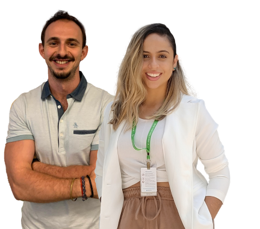

Talentos Diversos
Futuros Possíveis
Nosso Programa de Trainee 2022, Talentos Diversos, Futuros Possíveis, está no ar! Agora, estamos em busca de novos talentos para continuar escrevendo a nossa história. Queremos te conhecer e saber o que torna você a pessoa ideal para entrar no time VC!
Somos uma empresa de materiais de construção e soluções sustentáveis. Estamos presentes em 11 países e a líder do setor da construção. Nosso portfólio vai além dos cimentos e inclui concretos, argamassas e agregados. Atuamos também nas áreas de insumos agrícolas, gestão de resíduos e coprocessamento. Para nós, da Votorantim Cimentos, tão importante quanto atingir resultados é a forma como agimos para chegar lá. Nosso Jeito VC faz parte do nosso DNA e compõe nossa essência. São os princípios que orientam e guiam nossos comportamentos do dia a dia e que nos ajudam a construir um futuro ainda mais promissor. Nosso Jeito de Ser é ético e humano, Nosso Jeito de Fazer é juntos com excelência e o Nosso Jeito de Ir Além é com coragem para transformar. Você topa fazer parte desta jornada?
Aqui, a sua história nos molda para sermos melhores. Trabalhamos para promover cada vez mais um espaço de construção de histórias e lutas diversas, contadas por pessoas reais que acreditam em um futuro melhor. E essa jornada só é possível com pessoas que estejam dispostas a construírem esse espaço, caminhando juntos no mesmo propósito. Por isso, é tão importante para nós ter você com a gente neste processo.
Inscreva-seVeja alguns depoimentos dos nossos ex-trainees
Olá! Meu nome é Flávia Cavalcante, entrei na VC na turma de Trainees de 2014 e hoje atuo como Gerente de Gestão Corporativa. Nossa responsabilidade é garantir que a estratégia da empresa seja transformada em metas, que o resultado esperado do ano seja alcançado e que todos os empregados e empregadas saibam como podem contribuir para que isso aconteça. Para isso, utilizamos metodologias, ferramentas de qualidade e acompanhamos os projetos que são desenvolvidos em diversas áreas da empresa. Se você busca trabalhar em uma empresa que te proporciona autonomia para propor novas soluções, ideias e expor sua opinião com simplicidade e confiança, não deixe se se inscrever no Programa de Trainee Votorantim Cimentos 2022, estamos te esperando! #VemSerVC
Olá, sou o Luan Baldan, fui trainee da turma 2020/21 e atualmente faço parte de um time da diretoria de logistica na VC, mas sabe o que me faz acreditar que tudo tem dado tão certo? Ser eu mesmo em todas as etapas, sem exceção. Sempre acreditei que cada um tem sua história, suas experiências, seus conhecimentos e por isso ninguém é mais ou menos do que o outro, então foi através disso consegui ser protagonista de mim mesmo durante todo o processo sem me preocupar em ser melhor que certo candidato(a), pois sabia que se fosse para a vaga ser minha eu teria que sustentar para sempre aquela pessoa que fui durante a seletiva. Com isso, viva intensamente cada etapa, demonstre seus sentimentos sem medo e principalmente, tenha brilho no olhar! (Só não vale pingar um colírio né, rs).
Olá! Meu nome é Flávia Cavalcante, entrei na VC na turma de Trainees de 2014 e hoje atuo como Gerente de Gestão Corporativa. Nossa responsabilidade é garantir que a estratégia da empresa seja transformada em metas, que o resultado esperado do ano seja alcançado e que todos os empregados e empregadas saibam como podem contribuir para que isso aconteça. Para isso, utilizamos metodologias, ferramentas de qualidade e acompanhamos os projetos que são desenvolvidos em diversas áreas da empresa. Se você busca trabalhar em uma empresa que te proporciona autonomia para propor novas soluções, ideias e expor sua opinião com simplicidade e confiança, não deixe se se inscrever no Programa de Trainee Votorantim Cimentos 2022, estamos te esperando! #VemSerVC
Olá, sou o Luan Baldan, fui trainee da turma 2020/21 e atualmente faço parte de um time da diretoria de logistica na VC, mas sabe o que me faz acreditar que tudo tem dado tão certo? Ser eu mesmo em todas as etapas, sem exceção. Sempre acreditei que cada um tem sua história, suas experiências, seus conhecimentos e por isso ninguém é mais ou menos do que o outro, então foi através disso consegui ser protagonista de mim mesmo durante todo o processo sem me preocupar em ser melhor que certo candidato(a), pois sabia que se fosse para a vaga ser minha eu teria que sustentar para sempre aquela pessoa que fui durante a seletiva. Com isso, viva intensamente cada etapa, demonstre seus sentimentos sem medo e principalmente, tenha brilho no olhar! (Só não vale pingar um colírio né, rs).
Você já entendeu que seu lugar é na VC? Então se liga em como vai funcionar o nosso processo seletivo
É importante que você confira os critérios de formação para cada uma das oportunidades, para ter a certeza que seu perfil está aderente à vaga
Até 3 anos de formação
Disponibilidade para alta mobilidade - residir - a nível nacional
Queremos muito ter você conosco, por isso separamos as melhores dicas que são essenciais para mandar bem na trilha online e em todas as outras etapas. Vem com a gente?
Corre e clica no botão, estamos esperando você!